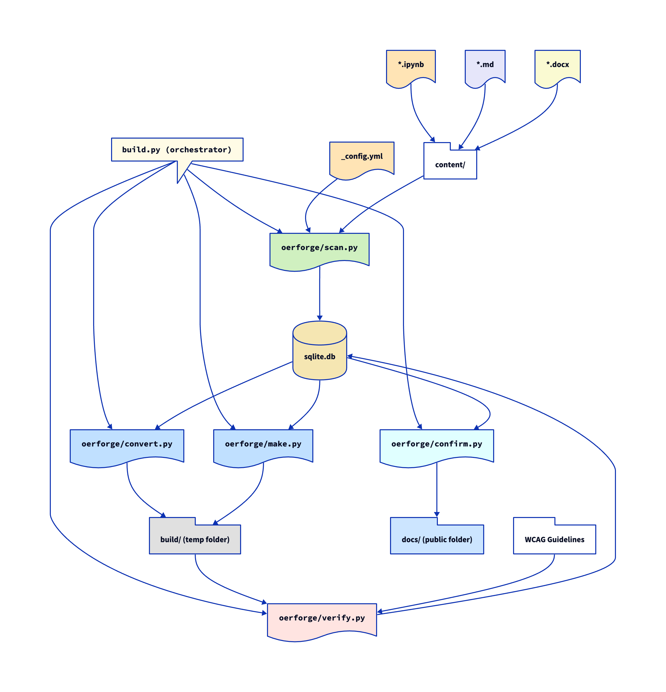

OER-Forge is a suite of tools to help authors create WCAG-compliant Open Educational Resources (OERs). The project is currently under development.
Below we describe the build system and its components; note that only scan.py and parts of convert.py are currently functional. And convert.py currently only supports conversion of Jupyter Notebooks (.ipynb) to Markdown (.md) and Word (.docx).
OER-Forge is a Python package with five modules (oerforge/):
scan.py - uses _config.yml and the files present in content/ to populate an sqlite database with site and file info.convert.py - draws from sqlite.db to convert files in content/ and places them in build/files/ preserving the user's file structuremake.py - draws from sqlite.db to builds a temporary WCAG compliant site in build/.verify.py - reviews build/ in the context of WCAG Guidelines to generate a report and update pages on the site indicating level of compliance.confirm.py - integrates the WCAG reporting information into the site and rebuilds as a public site in docs/OER-Forge uses build.py to orchestrate the build process.
- build.py - uses functions from each module to construct the build in build/
The following diagram illustrates the envisioned build process:
content/ directory and _config.yml, scan.py populates sqlite.db. This includes metadata about the site and the files to be processed as well as their locations. Figures and images are also identified and catalogued. This is functional.convert.py reads from sqlite.db to convert files in content/ to their appropriate formats, placing them in build/files/ while preserving the user's file structure. The tools in convert.py currently support conversion of Jupyter Notebooks (.ipynb) to Markdown (.md) and Word (.docx), and will be extended to support additional formats. The module convert.py uses the file extensions to determine the appropriate conversion tools and which formats to convert to (i.e., it will not attempt to convert a .md file to .md or a .docx file to .ipynb). This is partially functional.make.py reads from sqlite.db to build a temporary WCAG compliant site in build/. This is not yet functional.verify.py reviews build/ in the context of WCAG Guidelines to generate a report and update pages on the site indicating level of compliance. This is not yet functional.confirm.py integrates the WCAG reporting information into the site and rebuilds as a public site in docs/. This is not yet functional.
OER-Forge is under active development. Below is a punchlist of tasks to be completed. If you are interested in contributing, please reach out danny@openphysicsed.org.
scan.py can read content/ and _config.yml to populate sqlite.dbconvert.py can convert files in content/ to their appropriate formsconvert.py can convert .ipynb to .md with imagesconvert.py can convert .ipynb to .docx with imagesconvert.py can convert .ipynb to .tex with imagesconvert.py can convert .ipynb to .pdf with imagesconvert.py can convert .docx to .md with imagesconvert.py can convert .docx to .tex with imagesconvert.py can convert .docx to .pdf with imagesconvert.py can convert .md to .docx with imagesconvert.py can convert .md to .tex with imagesconvert.py can convert .md to .pdf with imagesconvert.py can write location of converted files to sqlite.dbmake.py can build the initial WCAG compliant site to build/verify.py can traverse build/ to indicate which page builds are okverify.py can write build results to sqlite.db for each pageverify.py can read WCAG guidelines in a parse-able wayverify.py can traverse build/ to evaluate level of WCAG complianceverify.py can write ECAG compliance levels to sqlite.db for each pageconfirm.py can read compliance levels and modify page to indicate current levelconfirm.py can generate a WCAG report on site and individual pagesconfirm.py can build public site to docs/